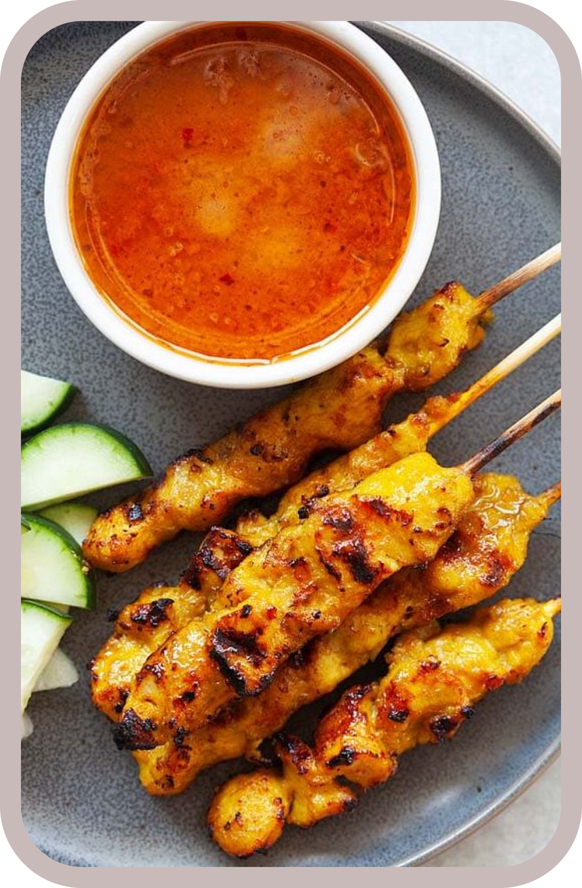
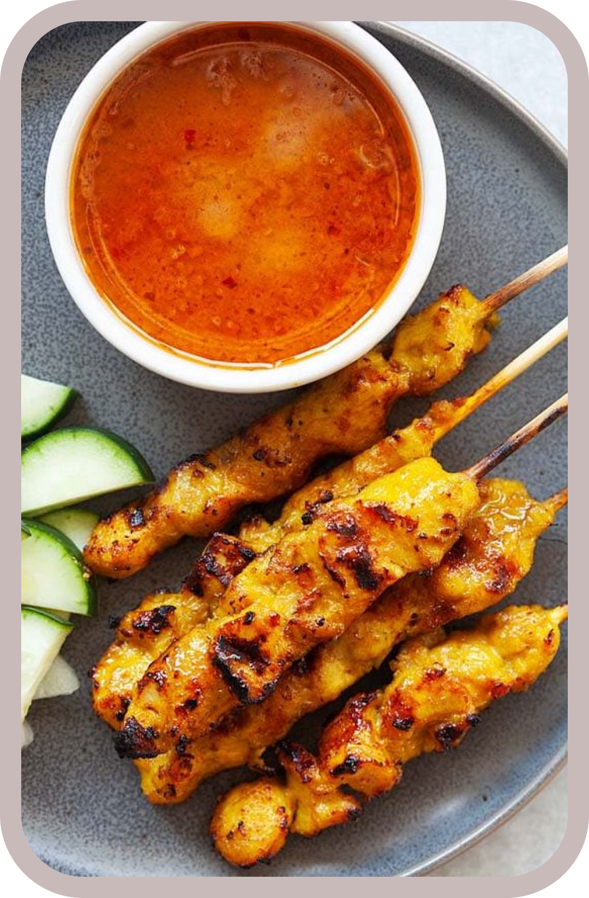

Rendang is The Most Delicious
Food in Indonesia
 

Sate or satai is a food made from meat that is cut into small pieces and stabbed in such a way with a stick of coconut or bamboo leaf bone, then grilled using wood charcoal coals. Satay is served with a variety of spices depending on the variation of the satay recipe. The meat used for satay includes chicken, goat, lamb, beef, pork, rabbit, horse, and others.

LETS EXSPLORE
ANOTHER FOOD
Traces of Indonesian cuisine have been found in a number of inscriptions from the 8th to 10th centuries AD. At that time, the term culinary was known, namely food related to the kitchen, made with a touch of art and providing enjoyment. This can be found in Javanese and Sumatran inscriptions. However, further east of Indonesia, there are not many records, and the material is more homogeneous, namely sago
Food can be said to be a regional specialty if the food is a heritage and characteristic of an area. The food of each region is influenced by the availability of ingredients in that area. Then the cooking knowledge obtained from the level of civilization, cultural progress, and interaction with other ethnic groups/nations which is usually obtained from trade, colonization.